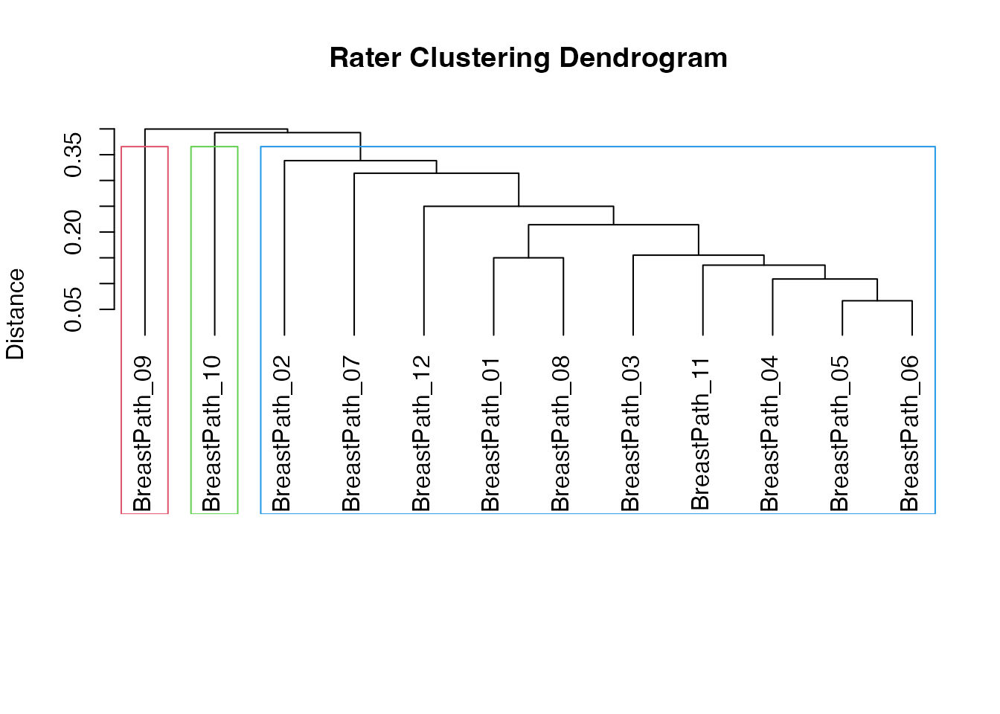

Diagnostic Style Clustering: Do Pathologists Form Schools?
Source:vignettes/15-diagnostic-style-clustering.Rmd
15-diagnostic-style-clustering.RmdA single kappa says how much a panel agrees overall. It does not say whether the disagreement is random or whether the raters split into groups that read the same slides in systematically different ways. Usubutun et al. (2012) showed, for endometrial intraepithelial neoplasia, that 20 pathologists formed distinct “diagnostic styles” by hierarchical clustering of their diagnoses.
The Interrater Reliability analysis
(agreement()) offers this as Rater
clustering.
In jamovi
- meddecide > Agreement > Interrater Reliability.
- Move one column per pathologist into Raters.
- Open Rater and Case Diagnostics > Rater Clustering (Identify Rating Pattern Groups) and tick Rater clustering.
- Choose:
- Clustering method: Hierarchical (dendrogram) (default) or K-means.
- Distance metric: default Concordance (1 - Lin’s CCC). For categorical diagnoses, Exact agreement (categorical) uses the proportion of cases on which two raters disagree.
- Linkage method (hierarchical): default Average linkage (UPGMA).
- Number of clusters: where to cut the dendrogram (default 3).
- Dendrogram and Cluster heatmap are on by default.
To reproduce the Usubutun approach, use Distance metric = Exact agreement (categorical) and Linkage = Ward linkage (minimum variance).
Rater characteristics (experience, training institution) are not inputs of the analysis. Compare the cluster memberships with them afterwards, as below.
In R
The bundled breast_diagnostic_styles data holds 12
breast pathologists’ diagnoses of 60 cases (object
breast_data).
data(breast_diagnostic_styles)
dx <- breast_data$diagnosis_data
res <- agreement(
data = dx,
vars = sprintf("BreastPath_%02d", 1:12),
raterClustering = TRUE,
clusterMethod = "hierarchical",
clusterDistance = "agreement",
clusterLinkage = "ward",
nClusters = 3
)
res$irrtable$asDF
#> method subjects raters peragree kappa ci_lower ci_upper z
#> "1" Fleiss' κ 60 12 20 0.6776424 0.6199937 0.7352911 23.52108
#> p
#> "1" 1.153025e-31
clusters <- res$raterClusterGroup$raterClusterTable$asDF
clusters
#> rater cluster cluster_size avg_similarity
#> "BreastPath_01" BreastPath_01 1 10 0.8222222
#> "BreastPath_02" BreastPath_02 1 10 0.7203704
#> "BreastPath_03" BreastPath_03 1 10 0.8166667
#> "BreastPath_04" BreastPath_04 1 10 0.8296296
#> "BreastPath_05" BreastPath_05 1 10 0.8574074
#> "BreastPath_06" BreastPath_06 1 10 0.8500000
#> "BreastPath_07" BreastPath_07 1 10 0.7333333
#> "BreastPath_08" BreastPath_08 1 10 0.7907407
#> "BreastPath_09" BreastPath_09 2 1 NA
#> "BreastPath_10" BreastPath_10 3 1 NA
#> "BreastPath_11" BreastPath_11 1 10 0.8166667
#> "BreastPath_12" BreastPath_12 1 10 0.7629630The cluster column is the group of each rater;
avg_similarity is the mean similarity (here, proportion of
agreement) with the other members of the same cluster, and is empty for
a rater who forms a cluster alone.
res$raterClusterGroup$raterDendrogram
Relating clusters to rater characteristics
info <- breast_data$pathologist_info
merged <- merge(clusters, info, by.x = "rater", by.y = "pathologist_id")
table(merged$cluster, merged$experience_level)
#>
#> Junior Mid-level Senior
#> 1 3 2 5
#> 2 0 1 0
#> 3 0 0 1
table(merged$cluster, merged$diagnostic_philosophy)
#>
#> Aggressive Conservative Moderate
#> 1 4 4 2
#> 2 0 0 1
#> 3 0 0 1With 12 raters these cross-tables are descriptive only; any test of association would have very little power.
A second example, lymphoma_diagnostic_styles (10
hematopathologists, 45 cases), works the same way with
vars = sprintf("HemaPath_%02d", 1:10).
Pass the rater names as a literal vector or an expression such as
sprintf(); like other jamovi functions,
agreement() reads a bare variable name given to
vars as a column name.
Interpreting with care
- Clusters are exploratory. Hierarchical clustering always returns a tree, even for raters who disagree at random; the number of clusters is your choice.
- A rater alone in a cluster is an outlier worth reviewing, not necessarily wrong.
- Check stability: rerun with a different linkage (average vs Ward) or distance and see whether the same groups reappear.
- Report the overall kappa, the dendrogram, and the cluster memberships together.
Case clustering (same panel,
caseClustering = TRUE) groups cases instead of raters and
helps find the case types that drive disagreement.
References
- Usubutun A, Mutter GL, Saglam A, et al. Reproducibility of endometrial intraepithelial neoplasia diagnosis is good, but influenced by the diagnostic style of pathologists. Mod Pathol. 2012;25(6):877-884. doi:10.1038/modpathol.2011.220
- Ward JH Jr. Hierarchical grouping to optimize an objective function. J Am Stat Assoc. 1963;58(301):236-244.
- Elmore JG, Longton GM, Carney PA, et al. Diagnostic concordance among pathologists interpreting breast biopsy specimens. JAMA. 2015;313(11):1122-1132.